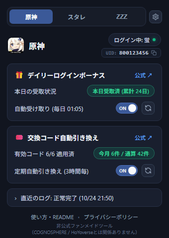

公式サイトにログインしておく
お使いのChromeブラウザで、HoYoLABまたは各ゲームの公式ページに普段通りログインしておきます。
HoYoLABのデイリーボーナス受け取り忘れや、交換コードのコピー＆ペースト作業から解放。
ブラウザを開くだけで、原石や星玉、ポリクロームなどの報酬を自動でゲーム内メールにお届けします。

初期設定は1分で完了します。パスワードの入力や登録作業は一切不要です。
お使いのChromeブラウザで、HoYoLABまたは各ゲームの公式ページに普段通りログインしておきます。
Chrome右上ツールバーのアイコンをクリックしてHoYoPassを開きます。初回のみ「利用開始のご確認」が表示されますので、プレイしているゲームにチェックを入れて「同意して利用を開始する」を押します。
各機能のスイッチが「ON」になっていれば、拡張機能の画面を開いていなくても毎日自動で報酬を受け取ります。受け取ったアイテムはゲーム内のメールボックスに届きます。
上部のタブで「原神」「スタレ」「ZZZ」をワンタップ切り替え。タブ横の歯車ボタン（⚙）から、プレイしていないタイトルを非表示にできます（非表示にしたゲームは自動巡回からも安全に除外されます）。
画面上部に表示されるあなたのゲームUIDをクリックすると、クリップボードに瞬時にコピーできます。イベント参加やフレンド登録時に便利です。
毎日深夜1時05分（またはその日初めてパソコンを起動した際）に全タイトルを自動巡回して受取。「↻」ボタンで今すぐ手動受取もできます。
3時間周期で最新の有効コードを自動巡回して引き換えます。生放送直後などは「↻」ボタンを押すことで、その場で即座に最新コードを一括引き換えできます。
「有効コード 6/6 適用済」で現在受け取れるコードの取りこぼしがないか確認可能。「今月 ◯件 / 通算 ◯件」にマウスを合わせると、次回の自動チェック予定時刻が表示されます。
画面下部のバーをクリックすると直近の実行ログが展開され、ログインボーナス受取や交換コード引き換えの結果をいつでも確認できます。
はい、安心してお使いいただけます。夜間にPCをシャットダウンしていたりスリープにしていても、翌日PCを起動してChromeを開いたタイミングで、その日の未受取ログインボーナスや最新の交換コードを自動的に検知して受け取ります。
※ パソコンの電源が切れている間や、Chromeブラウザが完全に終了している間は拡張機能は動作しません。
本ツールの初回実行時は、現在公開されている有効な交換コードをすべて巡回して引き換えを行います。事前にゲーム内などでご自身で手動入力済みのコードがあった場合、確認のためにゲーム内へ「使用済み（重複）」という通知メールが届くことがあります。
これはゲーム公式側の正常な受付通知であり、アカウントへの悪影響は一切ありません。一度確認されたコードはツール内に保存されるため、次回以降に同じメールが届くことはありませんのでご安心ください。
公式ページ側のセキュリティ保護（人間確認のパズル認証）が一時的に発動した状態です。通知をクリックするか、各カード右上の「公式 ↗」ボタンから公式ログインボーナスページを開き、1度手動でチェックインを行ってください。一度完了すれば次回以降は再び自動受取に戻ります。
パスワードやログイン情報の入力・保存は一切不要です。普段お使いのChromeで公式Webサイトにログインしている状態を利用して直接公式ページと通信するため、パスワードや個人情報が外部サーバーへ送信されることはありません。
いいえ。各カードの「↻」ボタンは、現在選択しているタブのゲームに対してのみ実行されます。なお、バックグラウンドでの自動受け取り（毎日深夜1時05分のログボ受取 / 3時間ごとのコード引き換え）は、設定されているすべてのゲームを自動で巡回します。